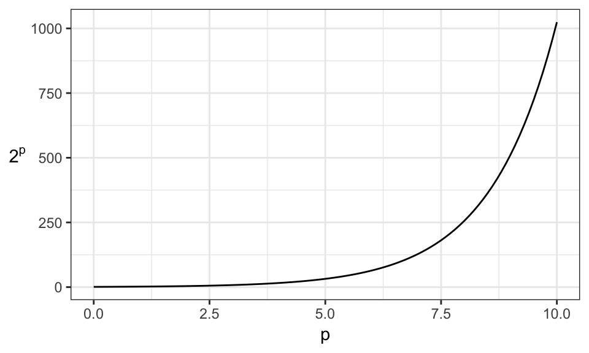

Chapter 11 Model Selection
Caution: in a highly developmental stage! See Section 1.1.
(BAIT 509 Class Meeting 04)
suppressPackageStartupMessages(library(tidyverse))
my_accent <- "#d95f02"
rotate_y <- theme(axis.title.y=element_text(angle=0, vjust=0.5))11.1 Exercise: CV
k-fold cross validation with caret::train() in R. See this resource
In python, can use sklearn.model_selection.cross_val_score.
11.2 Out-of-sample Error
11.2.1 The fundamental problem
First, some terminology: The data that we use to fit a model is called training data, and the fitting procedure is called training. New data (or at least, data not used in the training process) is called test data.
The goal of supervised learning is to build a model that has low error on new (test) data.
*** A fundamental fact of supervised learning is that the error on the training data will (on average) be better (lower) than the error on new data!
More terminology: training error and test error are errors computed on the respective data sets. Often, the test error is called generalization error.
Let’s check using loess on an artificial data set (from last time). Here’s the training error (MSE):
set.seed(87)
n <- 200
dat <- tibble(x = c(rnorm(n/2), rnorm(n/2)+5)-3,
y = sin(x^2/5)/x + rnorm(n)/10 + exp(1))
fit <- loess(y ~ x, data=dat, span=0.3)
yhat <- predict(fit)
mean((yhat - dat$y)^2)## [1] 0.009599779Here’s the test error:
n <- 1000
newdat <- tibble(x = c(rnorm(n/2), rnorm(n/2)+5)-3,
y = sin(x^2/5)/x + rnorm(n)/10 + exp(1))
yhat <- predict(fit, newdata = newdat)
mean((yhat - newdat$y)^2, na.rm = TRUE)## [1] 0.0112968If you think this was due to luck, go ahead and try changing the seed – more often than not, you’ll see the test error > training error.
This fundamental problem exists because, by definition, we build the model to be optimal based on the training data! For example, kNN and loess make a prediction that’s as close as possible to the training data.
The more we try to make the model fit the training data – i.e., the more we overfit the data – the worse the problem gets. Let’s reduce the loess bandwidth to emulate this effect. Here’s the training error:
set.seed(87)
n <- 200
dat <- tibble(x = c(rnorm(n/2), rnorm(n/2)+5)-3,
y = sin(x^2/5)/x + rnorm(n)/10 + exp(1))
fit <- loess(y ~ x, data=dat, span=0.1)
yhat <- predict(fit)
mean((yhat - dat$y)^2)## [1] 0.008518578Test error:
n <- 1000
newdat <- tibble(x = c(rnorm(n/2), rnorm(n/2)+5)-3,
y = sin(x^2/5)/x + rnorm(n)/10 + exp(1))
yhat <- predict(fit, newdata = newdat)
mean((yhat - newdat$y)^2, na.rm = TRUE)## [1] 0.01233726The effect gets even worse if we have less training data.
For kNN and loess, we can play with the hyperparameter, weight function, and degree of local polynomial (in the case of regression) to try and avoid overfitting. Playing with these things is often called tuning.
11.2.2 Solution 1: Use a hold-out set.
One solution is to split the data into two parts: training and validation data. The validation set is called a hold-out set, because we’re holding it out in the model training.
Then, we can tune the model (such as choosing the \(k\) in kNN or \(r\) in loess) to minimize error on the validation set.
set.seed(87)
n <- 200
dat <- tibble(x = c(rnorm(n/2), rnorm(n/2)+5)-3,
y = sin(x^2/5)/x + rnorm(n)/10 + exp(1))
n <- 1000
newdat <- tibble(x = c(rnorm(n/2), rnorm(n/2)+5)-3,
y = sin(x^2/5)/x + rnorm(n)/10 + exp(1))
tibble(r = seq(0.05, 0.7, length.out=100)) %>%
group_by(r) %>%
do({
this_r <- .$r
fit <- loess(y ~ x, data=dat, span=this_r)
yhat_tr <- predict(fit)
yhat_val <- predict(fit, newdata = newdat)
data.frame(
r = this_r,
training = mean((yhat_tr - dat$y)^2),
validation = mean((yhat_val - newdat$y)^2, na.rm = TRUE)
)
}) %>%
gather(key="set", value="mse", training, validation) %>%
ggplot(aes(r, mse)) +
geom_line(aes(group=set, colour=set)) +
theme_bw()## Warning in simpleLoess(y, x, w, span, degree = degree, parametric =
## parametric, : k-d tree limited by memory. ncmax= 200
## Warning in simpleLoess(y, x, w, span, degree = degree, parametric =
## parametric, : k-d tree limited by memory. ncmax= 200
## Warning in simpleLoess(y, x, w, span, degree = degree, parametric =
## parametric, : k-d tree limited by memory. ncmax= 200
## Warning in simpleLoess(y, x, w, span, degree = degree, parametric =
## parametric, : k-d tree limited by memory. ncmax= 200
We would choose a bandwidth (\(r\)) of approximately 0.35, because the error on the validation set is smallest.
Notice from this plot:
- The training error is lower than the out-of-sample error.
- We can make the training error arbitrarily small by decreasing \(r\).
- The out-of-sample error decreases, and then starts to increase again.
- NOTE: This doesn’t always happen, as you’ll see in Assignment 1. But it usually does.
After choosing the model that gives the smallest error on the validation set, then the validation error is also going to be on average lower than in a test set – that is, if we get even more data! The more tuning parameters we optimize using a validation set, the more pronounced this effect will be. Two things to note from this:
- This is not as bad as the original problem (where the training error is less than the test error), because the tuning parameters are still chosen on an out-of-sample set.
- If we want to use the validation error as an estimate of the out-of-sample error, we just have to be mindful of the fact that this is an optimistic estimate of the generalization error.
If you wanted an unbiased estimate of generalization error, you can start your procedure by splitting your data into three sets: training and validation as before, but also a test set that is never touched until you’ve claimed a final model! You only use the test set to get an unbiased estimate of generalization error.
There’s not really a standard choice for deciding how much data to put aside for each set, but something like 60% training, 20% validation, and 20% test is generally acceptable.
11.2.3 Solution 2: Cross-validation
The problem with the training-validation-test set approach is that you’re wasting a lot of data – lots of data are not being used in training! Another problem is that it’s not easy to choose how much data to put aside for each set.
A solution is to use (\(c\)-fold) cross validation (CV), which can be used to estimate out-of-sample error, and to choose tuning parameters. (Note that usually people refer to this as \(k\)-fold cross validation, but I don’t want to overload \(k\) from kNN!) \(c=10\) is generally accepted as the defacto standard. Taking \(c\) equal to the sample size is a special case called leave-one-out cross validation.
The general procedure is as follows:
- Partition the data into \(c\) (approximately equal) chunks.
- Hold out chunk 1; train the model on the other \(c-1\) chunks; calculate error on the held-out chunk.
- Hold out chunk 2; train the model on the other \(c-1\) chunks; calculate error on the held-out chunk.
- Hold out chunk 3; train the model on the other \(c-1\) chunks; calculate error on the held-out chunk.
- etc., until you’ve held out each chunk exactly once.
- Average the \(c\) errors to get an estimate of the generalization error.
You can then repeat this procedure for different values of the tuning parameters, choosing values that give the lowest error. Once you choose this tuning parameter, go ahead and use all the data as training data, with the selected tuning parameters.
CV is generally preferred to the hold-out set method, because we can fit a model that has overall lower error, but it’s computationally expensive.
11.3 Alternative measures of model goodness
The coefficient of determination (\(R^2\)) can be calculated whenever it makes sense to calculate MSE. It equals: \[ R^2 = 1 - \frac{\text{MSE of your model}}{\text{MSE of the model that always predicts } \bar{y}}. \] This number lies between 0 and 1, where a 1 represents perfect prediction on the set that you’re computing \(R^2\) with.
When we have a distributional assumption (such as Gaussian errors), we can calculate the likelihood – or more often, the negative log likelihood (\(\ell\)). If the density/mass function of \(y_i\) is \(f_i\), and we have \(n\) observations, then the negative log likelihood is \[ \ell = -\sum_{i=1}^{n} \log(f_i(y_i)). \]
11.4 Feature and model selection: setup
For supervised learning, we seek a model that gives us the lowest generalization error as possible. This involves two aspects:
- Reduce the irreducible error.
- This involves feature engineering and feature selection: finding and choosing predictors that give us as much information about the response as we can get.
- Reduce the reducible error (= bias & variance)
- This involves modelling and tuning, so that we can extract the information that the predictors hold about the response as best as we can. The better our model, the lower our reducible error is.
- This has been the main focus of BAIT 509, via models such as loess, kNN, random forests, SVM, etc.
Recall for (2) that we avoid overfitting by tuning (choosing hyperparameters, such as \(k\) in kNN) to optimize generalization error. We estimate generalization error either using the validation set approach, cross validation, or the out-of-bag approach for bagging.
The same thing applies to choosing features/predictors and choosing models, although model selection has a few extra components that should be considered.
11.5 Model selection
The question here is, what supervised learning method should you use? There are a few things you should consider.
- Quantitative choice
Suppose you’ve gone ahead and fit your best random forest model, kNN model, linear regression model, etc. Which do you choose? You should have estimated the generalization error for each model (for example, on a validation set) – choose the one that gives the lowest error.
You might find that some models have roughly the same error. In this case, feel free to use all of these to make predictions. You can either look at all predictions, or take an average of the model outputs (called model averaging). Considering all models may be quite informative, though – for example, if all models are suggesting the same thing for a new case, then the decision is clearer than if they all say different things.
- Qualitative choice
Sometimes, after exploring the data, it makes sense to add model assumptions. For example, perhaps your response looks linear in your predictors. If so, it may be reasonable to assume linearity, and fit a linear regression model.
Note that adding assumptions like this generally reduce the variance in your model fit – but is prone to bias if the assumption is far from the truth. As usual, adding assumptions is about reducing the bias-variance tradeoff.
- Human choice (interpretability)
Sometimes it’s helpful for a model to be interpretable. For example, the slopes in linear regression hold meaning; odds ratios in logistic regression hold meaning; nodes in a decision tree have meaning. If this is the case, then interpretability should also be considered.
11.6 Feature (predictor) selection
Recall that, when tuning a supervised learning method (such as choosing \(k\) in kNN), we can make the training error arbitrarily small – but this results in overfitting the training data. The same thing applies to the number of predictors you add.
Here’s an example. I’ll generate 100 observations of 1 response and 99 predictor variables totally randomly, fit a linear regression model with all the predictors, and calculate MSE:
set.seed(38)
dat <- as.data.frame(matrix(rnorm(100*100), ncol=100))
names(dat)[1] <- "y"
fit <- lm(y~., data=dat)
mean((dat$y - predict(fit))^2)## [1] 7.519591e-29The MSE is 0 (up to computational precision) – the response is perfectly predicted on the training set.
If we consider the number of predictors as a tuning parameter, then we can optimize this by estimating generalization error, as usual.
But there are approaches that we can use that’s specific to feature selection, that we’ll discuss next. You are not expected to apply these for your project! This is just for your information.
11.6.1 Specialized metrics for feature selection
You are not required to use this method for your project.
Using these specialized metrics, we don’t need to bother holding out data to estimate generalization error: they have a penalty built into them based on the number of predictors that the model uses.
- The adjusted \(R^2\) is a modified version of \(R^2\).
- The AIC and BIC are modified versions of the negative log likelihood.
There are others, like Mallows’ \(C_p\).
Optimize these on the training data – they’re designed to (try to) prevent overfitting.
But, with \(p\) predictors, we’d have \(2^p\) models to calculate these statistics for! That’s a lot of models when \(p\) is not even all that large. Here’s how the number of models grows as \(p\) increases:

For 10 predictors, that’s 1000 models. For 20 predictors, that’s over 1,000,000.
11.6.2 Greedy Selection
You are not required to use this method for your project.
Instead of fitting all models, we can take a “greedy approach”. This may not result in the optimal model, but the hope is that we get close. One of three methods are typically used:
- Forward Selection
The idea here is to start with the null model: no predictors. Then, add one predictor at a time, each time choosing the best one in terms of generalization error OR in terms of one of the specialized measures discussed above. Sometimes, a hypothesis test is used to determine whether the addition of the predictor is significant enough.
- Backward Selection
The idea here is to start with the full model: all predictors. Then, gradually remove predictors that are either insignificant according to a hypothesis test, or that gives the greatest reduction in one of the specialized measures discussed above.
- Stepwise Selection
The idea here is to combine forward and backward selection. Instead of only adding or only removing predictors, we can consider either at each iteration: adding or removing.
11.6.3 Regularization
You are not required to use this method for your project.
When training a model, we can write the training procedure as the optimization of a loss function. For example, in regression, we want to minimize the sum of squared errors.
Regularization adds a penalty directly to this loss function, that grows as the number of predictors grows. This is in contrast to the specialized measures (like adjusted \(R^2\)) that adds the penalty to the error term after the model is fit. There are different types of regularization, but typically those that involve an L1 regularizer are used in feature selection.